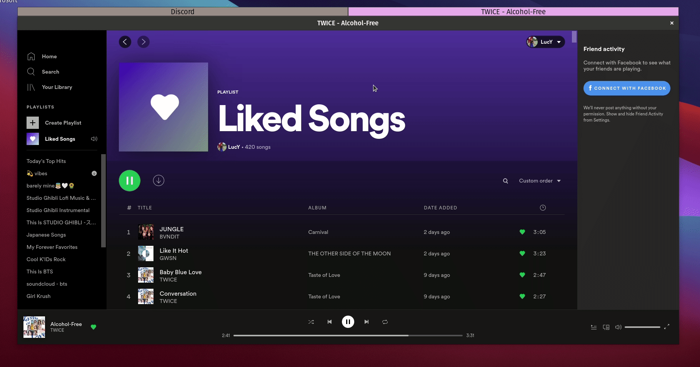
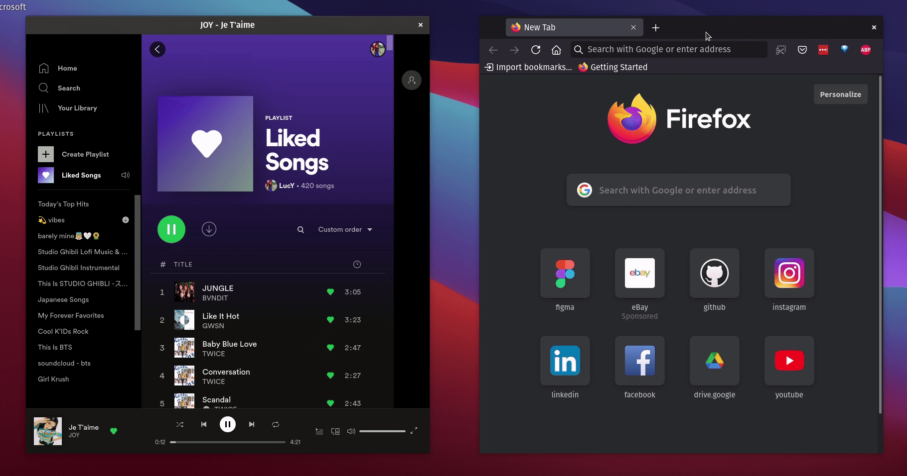

In the summer of 2020, I switched to Ubuntu Budgie for a short period time. After some hardware issues, I reverted back to Windows. Well, this summer of 2021, I’m back to try to use Linux again.
It’s been a month since I tried out Pop!_OS and here are my thoughts! I’ll keep adding to this post as I continue to use Pop!_OS. For anyone else reading this, I have a HP Spectre 360x.
Some differences from last summer:
I’ll be dual booting. There’s some things on Windows, like better touchscreen support, that I use time to time. Additionally, if anything ever happens on my Linux setup, I can go back to my Windows setup.I recently completely removed Windows and now am only running Pop!_OS.I’ll be trying out Pop!_OS this time vs. Ubuntu Budgie.
Stuff I like
- Keyboard shortcuts! Such a time saver. They are built into Pop!_OS so you don’t need to do anything to set up them!
- Searching up applications: when I search for apps on Windows, I press the Windows key and then start typing. But since it has to switch from the menu to the search, there’s always lag and it skips a few of the first characters. For instance, “word” becomes “ord”. On Pop!_OS, search is SO fast.
- My wifi doesn’t break anymore? Before on Windows I was disconnected from my wifi everyday for a few minutes. Now it just doesn’t happen when I use Linux. Weird…
- The terminal: before I was using WSL2 which works, but there’s downsides to it (file transfer is hella slow). Now with a Linux shell everything is so fast and it just works.
- apt! !downloading programs is super easy with apt and there’s also a pop shop!
- Stuff just runs faster? In WSL2, the commands like
code .andzola servetook at least 5-10 seconds to run. In Pop!_OS it’s almost instant. - NOTIFICATIONS DON’T COME FROM THE BOTTOM RIGHT. If Windows moved their notifications to anywhere but the bottom right, I’d consider using Windows again.
- Tiling and Stacking is so fast and so convenient. I’m not sure how I was able to use Windows now that I use these features…


So fast 😍 and no mouse involved. And yes, I am using the macOS background.
Stuff I miss
- I miss the touchscreen support for drawing. It’s not really usable on Linux because I kinda lost all the hardware/drivers support. But I knew this could be an issue.
- Notion: there’s no official Notion desktop application for Linux. But no worries, I used this. Unfortunately, is seems like there is no longer support for it so I’ll have to see how it goes…
- Monitor support: On Windows, it matches the resolution or something so that applications don’t look too small or too large on screens of different sizes (something called fractional scaling). Sadly, this is very slow on Pop!_OS. This means I can only have applications in one resolution size, so stuff on my moniter might look a bit big and stuff on my laptop screen might look a bit small. But after a few weeks I’ve gotten used to this.
Problems
- The bluetooth is kinda buggy, but this reddit post helped kinda fix it?
- Gestures didn’t work out of the box but after installing Touchegg they seem to work now.
- I don’t like 21.04 as much (and it was crashing my laptop). I reverted the update (reinstalled the OS from scratch) and I’m back on 20.10.